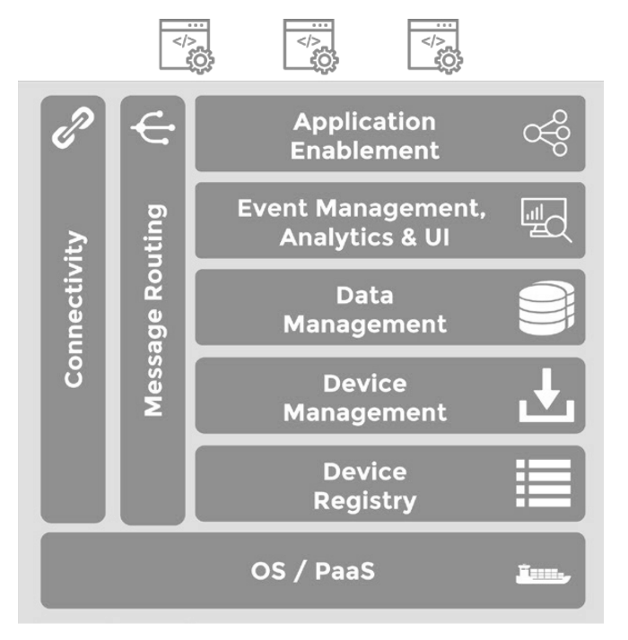
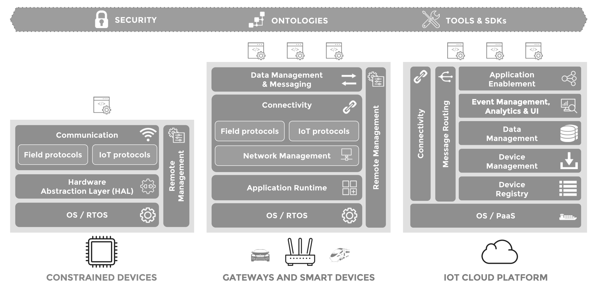

Since from the beginning of the Internet, there was the desire to
connect more “things” to it. Source: ARPANET Completion Report: January
4, 1978.
ARPANET Completion Report January 4,
1978
Figure 1.1: ARPANET Completion Report January 4,
1978
The original idea of the Internet was to connect computers, but very
soon, the idea of connecting other devices to the network emerged. The
image above shows a representation of the ARPANET network in 1978, where
we can see various types of devices connected to the network such as
mainframe computers, minicomputers, and terminals through different
geographical locations such as universities, research institutions, and
government agencies involving multiple countries and satellite
links.
1.2 Where are we today ?
Today, the Internet and the Web have evolved far beyond their
original purpose of connecting a handful of computers. They now
interconnect billions of devices worldwide—including smartphones,
tablets, sensors, vehicles, appliances, and industrial machines—across
every continent. This massive global network enables seamless
communication, collaboration, and data exchange at unprecedented
scale.
The exponential growth in connected devices has led to an explosion
in the volume of data generated, transmitted, and processed every
second. Modern Internet infrastructure supports vast amounts of
real-time information, multimedia content, and interactive services.
Cloud computing, edge computing, and advanced networking technologies
have made it possible to deliver rich digital experiences, from social
media and streaming platforms to e-commerce, smart cities, and
industrial automation.
As a result, the Internet has become the backbone for countless
services and applications, powering innovation and transforming how we
live, work, and interact. The availability of massive data volumes and
intelligent services continues to drive new opportunities and challenges
in connectivity, security, and digital transformation.
The current state of the
Internet/Web
Figure 1.2: A “snapshot” of the current state of the
Internet/Web
1.3 The
“First” Connected Devices - The Cold Drink Machine
The ARPANET-connected Coke machine at Carnegie Mellon University is
widely recognized as one of the earliest examples of a “smart” connected
device. This innovative project demonstrated how everyday appliances
could be enhanced with network connectivity, paving the way for future
developments in the Internet of Things (IoT).
Key highlights of the ARPANET-connected Coke machine:
Developed by students at Carnegie Mellon University’s School of
Computer Science.
Switches were installed in the Coke machine to monitor the number of
bottles in each row.
The system tracked how long each bottle remained in the machine;
bottles stored for a longer time were labeled as “cold.”
Users could remotely access the machine’s status via a finger
interface over ARPANET.
This pioneering experiment inspired inventors worldwide to create
their own network-connected appliances.
Figure 1.3: CSE3002 Team Project History of Internet
of Things (IoT) Devices and Their Influence on Cyber Security Team F
Christopher Byars Dylan Leonard Brian Patino. [Link]
1.4 The “First”
Connected Devices - The XCoffee
The XCoffee is created at the Computer Laboratory of the University
of Cambridge. Two academics who worked at the Trojan Room in the
laboratory had a video-frame grabber attached to one of the computers.
They decided to connect a camera controlled by a server application that
was observing the coffee pot and taking pictures of it several times a
minute. Then the pictures were sent to the client application, to keep
the user updated on the information about whether the pot was
filled.
XCoffee Machine
Figure 1.4: The XCoffee Machine - The First
“Connected Device”
The mobile revolution is changing the way we live, work, and
interact. Mobile devices have become an integral part of our daily
lives, enabling us to stay connected, access information, and perform
various tasks on the go. The proliferation of smartphones, tablets, and
wearable devices has transformed communication, entertainment, and
productivity, making it easier than ever to stay connected to the world
around us.
In the picture below, you can see how the mobile revolution has
transformed St. Peter’s Square in Vatican City. The left image from 2005
shows a traditional gathering of people, while the right image from 2013
captures a sea of mobile devices held up by attendees, highlighting the
significant impact of mobile technology on social interactions and
events.
What a difference 8 years makes: St. Peter’s Square in 2005 and
yesterday (2013)” (Facebook NBC News)
Piazza San Pietro - The Mobile
Revolution
Figure 1.5: Piazza San Pietro - The Mobile
Revolution
This image hides an interesting aspect on what we are not seeing and
able to support this massive number of mobile devices. The answer is the
Network and Internet infrastructures, which are the backbone of
the mobile revolution and are able to support the increasing demand for
data and connectivity combined with Cloud Computing infrastructures and
services.
Those infrastructures evolved a lot in the last 20 years, and they
are still evolving to support the new requirements of the mobile world
and as we will see in this course, the Internet of Things world.
Another interesting example is the event of the concert of Vasco
Rossi in Modena Park, July 2017, where more than 230K people attended
the event and almost all of them were using their mobile devices to
share the event in real time.
Vasco Rossi Concert, Modena
Park
Figure 1.6: 230K Devices at Vasco Rossi Concert @
Modena Park - July 2017
This is another example of how the mobile revolution is changing the
way we live and interact, and how the underlying network and internet
infrastructures are crucial to support this massive connectivity.
1.5.1 Mobile & Wearable
Computing
Another interesting aspect of the mobile revolution is the rise of
wearable computing devices, such as smartwatches, fitness trackers, and
augmented reality glasses. These devices are designed to be worn on the
body and provide users with real-time access to information,
notifications, and health monitoring features.
Wearable Computing
Figure 1.7: Wearable Computing Devices
Nowadays, we are not just associated to one or two mobile devices,
but we are surrounded by a plethora of connected devices that are
becoming an integral part of our daily lives. From smart home devices to
connected cars, the Internet of Things (IoT) is transforming the way we
interact with our environment and the world around us.
This devices creates a new paradigm where the physical and digital
worlds are increasingly interconnected, leading to new opportunities and
challenges in terms of connectivity, security, and data management.
2 The Internet
of Things (IoT) Evolution & Revolution
In the context of the mobile revolution, the Internet of Things (IoT)
has emerged as a transformative concept that envisions a world where
everyday objects are connected to the internet, enabling them to collect
and exchange data. The IoT represents a significant evolution in the way
we interact with technology, as it extends connectivity beyond
traditional computing devices to encompass a wide range of physical
objects and environments.
🔍 The Internet of Things (IoT) refers to the idea
of a network of networks with billions of uniquely identified physical
devices denoted also as Smart Objects organized in an
Internet-like structure. Smart Objects are items such
as sensors, consumer devices, and enterprise assets that are
connected to both the Internet and each other.
One of the key characteristics of the Internet of Things
(IoT) is its reliance on the Internet itself.
The IoT is not simply about connecting devices; it is about connecting
them using standard Internet protocols, rather than
proprietary solutions. This approach is crucial for achieving
scalability, interoperability, and global accessibility in IoT
systems.
At the core of IoT connectivity is the Internet Protocol
(IP), which provides a universal and standardized
method for devices to communicate and exchange data across
networks. Devices that join an IoT network are directly or
indirectly connected to an IP network, allowing them to be
addressed, managed, and integrated using standard IP-based
protocols. By leveraging IP as a common
protocol, IoT devices can not only communicate with each other,
but also connect seamlessly to the broader Internet and cloud
services. This enables new opportunities for data
storage, processing, and analysis, and supports the development
of innovative applications and services on a global
scale.
A key element to consider it that being connected to the Internet is
not mandatory for all the devices, but they must be able to communicate
using IP protocols, even if they are connected to a local network that
is not directly connected to the Internet. We can have IoT deployments
that are fully connected to the Internet, partially connected, or even
completely isolated from it, depending on the specific use case and
requirements. The common factor is that the devices must be able to
communicate using IP protocols, regardless of their connectivity to the
broader Internet.
Figure 1.9: IoT Protocol Stack vs Traditional
Networking Stack
IoT device cannot always use the traditional Internet protocol stack
due to their resource constraints (e.g., limited
processing power, memory, and energy). For this reason, IoT devices
often use lightweight protocols that are specifically
designed for resource-constrained environments. These protocols are
optimized for low power consumption, reduced bandwidth usage, and
efficient data transmission.
For example, two widely adopted protocols in IoT applications are
MQTT (Message Queuing Telemetry Transport) and
CoAP (Constrained Application Protocol).
MQTT is a lightweight, publish-subscribe
messaging protocol designed for efficient communication between devices
with limited bandwidth and resources. It is commonly used for telemetry
and remote monitoring in IoT scenarios. MQTT can be compared to
traditional enterprise messaging protocols such as AMQP
(Advanced Message Queuing Protocol), as both support the
publish-subscribe paradigm, but MQTT is optimized for constrained
environments.
CoAP is a specialized web transfer protocol
designed for use with resource-constrained devices and networks. It
follows a request/response model similar to HTTP (Hypertext
Transfer Protocol), but is much more lightweight, making it
suitable for IoT deployments where minimizing overhead is
critical.
These protocols are specifically engineered to be lightweight and
efficient, addressing the limitations of IoT devices in terms of
processing power, memory, and energy consumption. In contrast,
traditional protocols like HTTP and TCP (Transmission Control
Protocol) are more resource-intensive and may not be practical
for all IoT scenarios.
The adoption of standard Internet protocols—such as
IP, TCP, UDP, and HTTP—along with the use of
lightweight alternatives like MQTT and
CoAP, is essential for the successful
implementation and widespread adoption of IoT systems. By leveraging
these protocols, IoT devices can achieve seamless connectivity,
interoperability, and scalability, enabling a wide range of
applications and services that enhance our daily lives and transform
various industries.
For example, smart home devices (e.g., thermostats,
lights, and security cameras) use standard protocols to communicate with
mobile apps and cloud platforms, allowing users to monitor and control
their homes remotely. In industrial IoT, sensors and
machines use MQTT to transmit telemetry data to centralized dashboards
for real-time monitoring and predictive maintenance. Healthcare
wearables leverage CoAP to efficiently send patient data to
hospital systems for continuous health tracking.
Furthermore, the use of standard Internet protocols
facilitates the integration of IoT devices with existing IT
infrastructure and cloud services, enabling new opportunities
for data analytics, machine learning, and artificial
intelligence. For instance, IoT sensors in agriculture can use
lightweight protocols like MQTT to efficiently transmit environmental
data—such as soil moisture, temperature, and humidity—to cloud-based
analytics platforms. MQTT optimizes communication between
resource-constrained devices and the cloud by enabling reliable,
low-bandwidth data transfer. Once collected, this data can be exposed
via HTTP APIs, making it accessible to traditional applications such as
dashboards for real-time monitoring or AI models for advanced analytics.
This seamless integration of IoT protocols and standard web technologies
enables organizations to build smarter, more responsive, and data-driven
solutions across domains.
2.1 IoT Main Characteristics
The Internet of Things (IoT) is defined by several
distinctive characteristics that set it apart from traditional computing
paradigms. The most important keywords and concepts include:
Unique Identifiable Objects: Each “thing” in the
IoT ecosystem is uniquely identifiable and typically equipped with
embedded intelligence (e.g., sensors, actuators,
microcontrollers) to sense or interact
with the environment and communicate with external
systems.
Constrained Devices: Many IoT devices operate with
limited processing power, storage, and
energy resources, requiring efficient and lightweight
solutions.
IP-Based Networks: IoT connectivity is built on
Internet Protocol (IP) standards (including
IPv4 and IPv6), enabling global
addressing and interoperability.
Diverse Communication Technologies: IoT leverages a
wide range of communication technologies such as
WiFi, Cellular,
Bluetooth, LPWAN, and IEEE
802.15.4 to connect devices across different environments.
Standard Protocols & Interoperability: The use
of standard protocols (e.g., MQTT,
CoAP, HTTP) is essential for
interoperability among heterogeneous devices and
platforms.
Disruptive Heterogeneity: IoT systems exhibit
significant heterogeneity in terms of data
formats, hardware architectures, and
software platforms, posing challenges for integration
and management.
Security: Ensuring security and
privacy is critical due to the vast number of connected
devices and the sensitive nature of the data exchanged.
Interaction between People & Things: IoT
enables seamless interaction and
collaboration between people and
things, fostering new applications and user
experiences.
These characteristics collectively drive the evolution of IoT,
shaping its architecture, protocols, and application domains.
2.2 Some of the Main IoT
Challenges
The Internet of Things (IoT) presents several significant challenges
that need to be addressed to ensure its successful implementation and
widespread adoption. Some of the main challenges include:
Scalability: The IoT ecosystem is expected to grow
exponentially, with billions of devices connected to the internet.
Managing and scaling such a vast network of devices poses significant
challenges in terms of infrastructure, data management, and network
performance.
Interoperability: IoT devices come from various
manufacturers and use different communication protocols and data
formats. Ensuring seamless interoperability among heterogeneous devices
and platforms is crucial for the success of IoT systems.
Heterogeneity: The diversity of IoT devices,
ranging from simple sensors to complex machines, introduces challenges
in terms of device management, configuration, and integration.
Developing standardized approaches to handle this heterogeneity is
essential.
Security: The proliferation of connected devices
increases the attack surface for cyber threats. Ensuring robust security
measures to protect IoT devices and the data they generate is essential
to prevent unauthorized access, data breaches, and other security
risks.
Data Management: IoT generates massive amounts of
data that need to be collected, stored, processed, and analyzed.
Efficient data management strategies are required to handle the volume,
velocity, and variety of IoT data.
Energy Efficiency: Many IoT devices are
battery-powered and operate in resource-constrained environments.
Developing energy-efficient solutions is critical to prolong device
lifespan and reduce maintenance costs.
Privacy: IoT devices often collect sensitive
personal data, raising concerns about user privacy. Implementing
privacy-preserving mechanisms and ensuring compliance with data
protection regulations is essential.
Real-Time Processing: Many IoT applications require
real-time data processing and decision-making. Ensuring low latency and
high reliability in data transmission and processing is crucial for
time-sensitive applications.
2.3
From Wireless Sensor Networks (WSN) and Machine-to-Machine (M2M) to
IoT
Wireless Ad-hoc Sensor Networks (WSN) are considered
the precursors to the modern Internet of Things
(IoT), but they operated without a common, shared IP
network. WSNs laid the foundation for pervasive interaction
between people and their environments, with their potential captured in
the three key elements of their acronym:
Wireless: Emphasizes the freedom and
mobility enabled by eliminating physical wires,
allowing for flexible and rapid system deployment.
Sensor: Highlights the use of sensing
technology to perceive and
interact with the physical world, enabling a wide range
of applications.
Networks: Focuses on the ability to create systems
with distributed, communicating
devices whose collective functionality emerges from their
collaboration across large areas.
These core characteristics made WSNs a critical step toward the
development of scalable, distributed, and intelligent IoT systems.
2.4 Telemetry &
Machine-to-Machine (M2M)
Telemetry and Machine-to-Machine (M2M) communication are foundational
concepts in the evolution of connected devices and the Internet of
Things (IoT). Telemetry focuses on the remote collection of
measurements, while M2M extends this paradigm to enable autonomous,
bidirectional communication between devices.
Key characteristics:
Telemetry enables the remote acquisition of data
from field devices, allowing for continuous monitoring and analysis
without direct human intervention.
Long-range measurements: Examples include
temperature, humidity, and wind data from remote weather stations using
cellular or satellite networks (e.g., Inmarsat); telemetry in
Formula 1 for real-time vehicle diagnostics.
Short-range measurements: Medical devices such as
pacemakers use low-power telemetry coils to monitor
patient activity non-invasively.
Machine-to-Machine (M2M) communication generalizes
telemetry by supporting autonomic,
bidirectional data exchange between non-human-operated
machines and central collector systems.
Autonomous operation: Devices communicate and
coordinate actions without manual input.
Bidirectional communication: Information flows both
from field devices to central systems and vice versa, enabling remote
control, configuration, and updates.
2.5 M2M Fragmentation
The Machine-to-Machine (M2M) landscape is marked by significant
fragmentation and lack of standardization across industry verticals.
This fragmentation leads to inefficiencies, increased costs, and limited
scalability, as each sector tends to develop its own bespoke solutions
rather than leveraging common architectures and reusable components.
Key challenges of M2M fragmentation include:
Industry-Specific Solutions: Most industries
address their M2M requirements independently, often converging on
similar architectures and elements but rarely sharing solutions. As a
result, the “M2M wheel” is repeatedly reinvented from one sector to
another.
Customization Overload: Solutions are typically
designed, produced, and implemented on an industry-by-industry basis.
This leads to unique, customized hardware and software, often resulting
in sole-sourcing and vendor lock-in.
Limited Developer Ecosystem: Software development
is restricted to small groups of experts familiar with the specific
architecture and APIs of each platform, driving up development and
support costs.
Poor Economies of Scale: The diversity and
uniqueness of solutions make it difficult to achieve economies of scale
for components, resulting in higher costs and slower innovation.
2.6 Difference between M2M and
IoT
Figure 1.10: Schematic representation of the
difference between M2M and IoT
Aspect
M2M
IoT
Communication
Point-to-point
Many-to-many via Internet/cloud
Scope
Device-specific, narrow
Wide, heterogeneous, spanning multiple domains
Data Processing
Local, limited
Cloud-based, distributed, advanced analytics
Standards
Proprietary, domain-specific
Open, global, cross-domain
Scalability
Limited, hard to extend
Highly scalable, billions of devices
Applications
Vertical solutions (e.g., smart meter)
Horizontal ecosystems (e.g., smart cities, Industry 4.0)
WSN and M2M laid the groundwork for IoT by demonstrating the
potential of connected devices. However, IoT expands upon these concepts
by leveraging standard Internet protocols, enabling global connectivity,
interoperability, and scalability across diverse applications and
industries. Furthermore, in the IoT the possibility of distributing data
processing and intelligence across the edge, fog and cloud layers is a
key aspect that differentiate it from the traditional M2M approach with
the potential of enabling more complex and intelligent applications
working together in a collaborative manner.
2.7 IoT Device Core
Characteristics
Figure 1.11: Schematic representation of the core
characteristics of IoT devices
Understanding the core components of IoT devices is fundamental for
designing, developing, and deploying effective cyber-physical and IoT
systems. Identifying these modules allows engineers to address key
requirements such as connectivity, sensing, processing, and energy
management, ensuring that devices can reliably interact with both the
physical and digital worlds. A clear grasp of these building blocks also
supports interoperability, scalability, and security across diverse
application domains. The main modules of an IoT device usually
include:
Communication: Enables the device to exchange data
with other systems or networks, typically via a radio transceiver with
an antenna or a wired connection.
Microcontroller: Acts as the device’s “brain,”
running embedded software to control its behavior and manage
operations.
Sensors or Actuators: Allow the device to sense
environmental conditions or interact with the physical world, providing
input or output capabilities.
Power Source: Supplies energy to the device’s
electronic circuits. Common options include batteries, piezoelectric
sources (activated by physical force), or small solar cells (powered by
light).
IoT devices do not work alone, but they are part of a larger
ecosystem that includes multiple devices, networks, cloud services, and
user interfaces through different types of architectures and deployment
models as we briefly introduce in the next section.
2.8 A Shared IoT Multi-Layer
Model
Figure 1.12: An example of an IoT Multi-Layer Model
in the Industrial Domain where different layers are represented and
interconnected to support the IoT ecosystem. Link1,
Link2
A general multi-layer reference model is often used to abstract and
describe IoT systems and architectures. This model provides a high-level
overview of the main layers, clarifies their roles and interactions, and
supports the development of scalable, interoperable IoT solutions. While
the model can be tailored to specific implementations and requirements,
it serves as a foundational framework for understanding IoT
architectures.
This architecture typically comprises the following layers:
Perception Layer:
Physical Devices & Controllers: This is the
foundational layer where the “things” of IoT reside. It includes all the
physical sensors, actuators, devices, and intelligent edge nodes that
collect data from the environment or interact with it.
Network Layer:
Connectivity: Responsible for the secure and
reliable transmission of data from the perception layer to higher
layers. This involves various communication technologies like Wi-Fi,
Bluetooth, cellular, and specialized IoT protocols.
Edge Computing: This layer processes data closer to
the source (at the “edge” of the network), performing data element
analysis and transformation. It helps reduce latency, conserve
bandwidth, and improve security by processing data locally before
sending it to the cloud.
Data and Information Management Layer:
Data Accumulation: Focuses on storing the vast
amounts of data collected from IoT devices. This often involves various
database technologies optimized for big data.
Data Abstraction: This layer is responsible for
aggregating and accessing the stored data, presenting it in a
standardized and meaningful format for higher-level applications.
Services and Applications Layer:
Application: This layer provides the specific
functionalities and services that utilize the processed IoT data. This
includes reporting, analytics, and control mechanisms that enable users
to interact with and manage their IoT systems.
Business Layer:
Collaboration & Processes: The highest layer,
where the insights derived from IoT data are integrated into broader
business processes and decision-making. It involves people,
organizational workflows, and strategic collaborations that drive value
from IoT deployments.
2.9 IoT Software an Overview
Figure 1.13: A schematic representation of the main
actors involved in an IoT solution. Link1
An effective IoT solution comprises a diverse array of connected
devices (“things”) that collect and transmit data. These devices often
communicate via gateways, which serve as intermediaries to bridge local
device networks with broader enterprise or cloud infrastructures. The
network enables secure and reliable data exchange between devices,
gateways, and a centralized IoT platform—typically hosted on enterprise
back-end servers or in the cloud.
The IoT platform plays a pivotal role by aggregating, processing, and
integrating device data into existing enterprise systems and workflows.
Each component—devices, gateways, and the cloud platform—fulfills
distinct responsibilities:
Devices (“Things”): Sense, actuate, and generate
data from the physical environment.
Gateways: Manage connectivity, protocol
translation, and local processing, ensuring seamless communication
between devices and the network.
IoT Platform (Cloud/Enterprise Server):
Orchestrates device management, data analytics, integration with
business applications, and overall system reliability.
This layered architecture ensures scalable, interoperable, and secure
IoT deployments that can be tailored to meet specific business and
operational requirements. Of course this architecture can be more
complex and include additional components such as:
Edge/Fog Computing Nodes: Intermediate processing
units that perform data analysis and decision-making closer to the data
source, reducing latency and bandwidth usage.
Security Modules: Dedicated components for ensuring
data integrity, confidentiality, and authentication across the IoT
ecosystem.
User Interfaces: Dashboards, mobile apps, and other
interfaces that allow users to interact with and manage IoT devices and
data.
Analytics Engines: Advanced data processing units
that apply machine learning and AI techniques to derive insights from
IoT data.
Integration Layers: Middleware that facilitates
communication and data exchange between the IoT platform and existing
enterprise systems (e.g., ERP, CRM).
Management and Orchestration Tools: Software for
monitoring, updating, and managing the entire IoT infrastructure.
APIs and SDKs: Tools that enable developers to
build applications and services on top of the IoT platform.
Data Storage Solutions: Scalable databases and data
lakes designed to handle the large volumes of data generated by IoT
devices.
Communication Networks: Various network
technologies (e.g., LPWAN, 5G, Wi-Fi) that provide connectivity options
tailored to different IoT use cases.
Backup and Recovery Systems: Mechanisms to ensure
data resilience and availability in case of failures.
Monitoring and Alerting Systems: Tools that provide
real-time monitoring of device status, performance metrics, and alerting
for anomalies or failures.
Development and Testing Environments: Platforms
that facilitate the development, simulation, and testing of IoT
applications before deployment.
2.10 IoT Software - Sensor &
Actuator
Figure 1.14: IoT Devices software stack and main
components. Link1
The “Thing” serves as the initial component in an IoT solution,
typically generating data and interacting with the physical world.
Things are often constrained in terms of size and power supply, hence
they commonly utilize Microcontrollers (MCUs) with
limited capabilities. These MCUs are specialized for specific tasks,
designed for cost-effective mass production. The software running on
MCU-based devices is tailored to support specific functions. Key
features of the software stack on such devices may include:
IoT Operating System: While many devices operate
without an operating system, some incorporate embedded or real-time
operating systems specifically suited for small, constrained devices,
offering IoT-specific capabilities.
Hardware Abstraction: This software layer allows
access to MCU’s hardware features, such as flash memory, GPIOs, and
serial interfaces, abstracting their complexities.
Communication Support: Drivers and protocols
facilitate device connectivity to wired or wireless protocols like
Bluetooth, Z-Wave, Thread, CAN bus, MQTT, CoAP, enabling efficient
device communication.
Remote Management: The capability to remotely
control the device, enabling firmware upgrades or battery level
monitoring, ensuring efficient device management.
2.11 IoT Software - Gateways
Figure 1.15: IoT Gateways software stack and main
components. Link1
IoT gateways play a pivotal role in connecting sensors, actuators,
and devices to external networks and cloud platforms. They act as
intermediaries, enabling seamless communication, data processing, and
protocol translation between heterogeneous devices and systems. Gateways
can be standalone hardware units or embedded as functional modules
within larger devices such as industrial machines, vehicles, or smart
home appliances.
Key functions and characteristics of IoT gateways include:
Edge Data Processing and Storage: Perform local
data aggregation, filtering, and temporary storage to reduce network
latency and bandwidth usage.
Protocol Translation: Bridge communication between
devices using different protocols, ensuring interoperability across
diverse hardware and software ecosystems.
Device-to-Device Connectivity: Enable direct
communication and coordination among connected devices within a local
network.
Security and Reliability: Implement authentication,
encryption, and access control to protect data and ensure reliable
operation.
Scalability: Support large numbers of devices by
managing connections and distributing workloads across multiple
gateways.
Remote Management: Facilitate firmware updates,
configuration changes, and monitoring of connected devices from
centralized platforms.
Integration with Cloud and Enterprise Systems:
Forward processed data to cloud services or enterprise applications for
advanced analytics and decision-making.
IoT gateways rely on robust software stacks to deliver their core
functionalities. Key components of a modern gateway software stack
include:
Operating System: Most gateways run a
general-purpose OS, such as Linux, providing a stable and flexible
foundation for device management and application execution.
Application Runtime & Containerization:
Gateways often support dynamic application deployment and updates,
enabling execution environments for languages like Java, Python, or
Node.js. Containerization technologies (e.g., Docker) may be used for
isolation and scalability.
Connectivity & Protocol Support: Gateway
software must handle multiple device communication protocols (e.g.,
Bluetooth, Wi-Fi, ZigBee, Z-Wave, Thread) and network interfaces
(Ethernet, cellular, satellite), ensuring secure and reliable data
exchange across heterogeneous environments.
Data Management & Messaging: Local data
persistence and buffering allow gateways to operate during network
disruptions, support real-time analytics at the edge, and reliably
forward device data to cloud platforms using protocols such as MQTT or
HTTP.
Remote Management & Orchestration:
Administrators can remotely provision, configure, monitor, and update
gateways and their applications, streamlining maintenance and enabling
centralized control over distributed deployments.
These capabilities make IoT gateways essential for bridging diverse
devices, networks, and cloud services, supporting scalable, secure, and
flexible IoT solutions.
2.12 IoT Software - Cloud &
Platforms

Figure 1.16: IoT Gateways software stack and main
components. Link1
A modern IoT Cloud Platform provides a comprehensive set of
capabilities to support the management, integration, and utilization of
connected devices and data. These platforms serve as the backbone for
scalable, secure, and interoperable IoT solutions, enabling
organizations to efficiently handle device connectivity, data
processing, and application development.
Key features of an IoT Cloud Platform include:
Connectivity and Message Routing: Supports
interaction with a large number of devices and gateways, handling
diverse protocols and data formats. The platform normalizes and
integrates incoming data for seamless enterprise integration.
Device Management and Registry: Maintains a central
registry for device and gateway identification, enabling provisioning,
software updates, and lifecycle management.
Data Management and Storage: Incorporates scalable
data stores to efficiently handle the volume and variety of IoT data,
ensuring reliable storage, retrieval, and management.
Event Management, Analytics, and User Interface:
Provides scalable event processing, data consolidation, and analytics
capabilities. Facilitates the creation of reports, dashboards, and user
interfaces for data visualization and insight generation.
Application Enablement: Offers APIs and tools for
custom application development, allowing integration with external
systems and empowering developers to build tailored solutions on top of
the platform.
2.13IoT Software -
Cross-Stack Functionalities

Figure 1.17: IoT Cross-Stack Functionalities and
main components. Link1
When designing and implementing an IoT solution, it is essential to
address several cross-stack functionalities that ensure the system’s
reliability, interoperability, and scalability. These features span
across device, gateway, and cloud layers, providing foundational support
for secure, efficient, and flexible IoT deployments.
Security: Apply robust security mechanisms at every
layer of the IoT architecture, including device authentication, data
encryption, and access authorization. Comprehensive security strategies
protect against threats and ensure data integrity throughout the
ecosystem.
Ontologies and Data Standardization: Define
standardized data formats, ontologies, and metadata descriptions to
facilitate seamless data exchange and interoperability across
heterogeneous devices and platforms. Well-structured ontologies enable
effective analytics and integration in multi-domain environments.
Development Tools and SDKs: Provide developers with
versatile development tools and software development kits (SDKs) that
support a wide variety of hardware and software platforms. These
resources streamline the development process, promote code reusability,
and ensure compatibility across the IoT stack.
2.14 IoT Software - Key
Characteristics
A robust IoT software stack should embody several foundational
characteristics to ensure flexibility, interoperability, and scalability
across diverse deployment scenarios. These principles enable
organizations to build solutions that are adaptable, future-proof, and
capable of integrating with a wide range of devices, platforms, and
services.
Loose Coupling: Each layer of the IoT stack should
operate independently, allowing components from different vendors—such
as cloud platforms, gateways, and device stacks—to be combined
seamlessly. This flexibility supports easy integration and replacement
without disrupting the overall system.
Modularity: The stack should support the selection
and integration of features from various suppliers, enabling tailored
solutions that meet specific requirements. Modular design simplifies
customization and accelerates innovation.
Platform Independence: Components should be
agnostic to underlying hardware and cloud infrastructure. Device stacks
must work across multiple microcontrollers, while cloud platforms should
be compatible with different PaaS providers, ensuring broad
applicability and reducing vendor lock-in.
Open Standards: Communication and data exchange
should rely on open standards to guarantee interoperability and
compatibility among heterogeneous IoT components. Adhering to open
standards fosters ecosystem growth and simplifies integration.
Well-Defined APIs: Each layer should expose clear
and consistent Application Programming Interfaces (APIs), facilitating
straightforward integration with existing applications and other IoT
solutions. Well-defined APIs streamline development, enhance
connectivity, and support efficient data exchange.
3 Cyber–Physical Systems
In this context, Cyber-Physical Systems (CPS) play a
crucial role in bridging the gap between the physical and digital
worlds. CPS are systems that integrate computation, networking, and
physical processes to enable real-time monitoring, control, and
interaction with the physical environment.
A Cyber-Physical System (CPS) refers to
integrated systems that combine computational elements with physical
components, enabling the interaction and collaboration between the
digital and physical worlds. CPS typically involve a network of
sensors, actuators, and
computational devices that collect
data from the physical environment, process
it, and control physical processes or objects.
Figure 1.18: Cyber-Physical Systems (CPS) high-level
overview.
Typically, CPS are characterized by the following features:
Integration of Physical and Cyber Components: CPS
seamlessly integrate physical components (sensors, actuators, etc.) with
cyber components (computers, networks, software) to enable real-time
monitoring and control of physical processes.
Real-Time Interaction: CPS are designed to operate
in real-time, allowing for immediate response to changes in the physical
environment and enabling dynamic interactions between the physical and
digital worlds.
Networked Communication: CPS rely on networked
communication to facilitate data exchange and coordination between
distributed components, enabling collaboration and coordination across
different physical locations.
Autonomy and Adaptability: CPS often incorporate
autonomous decision-making capabilities, allowing them to adapt to
changing conditions and optimize performance based on real-time
data.
Safety and Reliability: CPS are often deployed in
safety-critical applications, requiring robust safety and reliability
measures to ensure the integrity and security of both physical and cyber
components.
Figure
1.19: Cyber-Physical Systems (CPS) phases overview.
As illustrated in the figure above, CPS typically involve the
following phases:
Perceive: In this phase, sensors collect data from
the physical environment, such as temperature, pressure, or motion.
Process: The collected data is then processed and
analyzed using computational algorithms to extract meaningful insights
and patterns. This phase can be further broken down into sub-phases:
Analyze: The collected data is then processed and
analyzed using computational algorithms to extract meaningful insights
and patterns.
Learn: Learning techniques may be applied to enable
the system to learn from historical data and improve its performance
over time.
Plan: Based on the analysis and learning, the
system can plan actions or responses to be taken in the physical
environment.
Act: Finally, actuators are used to execute the
planned actions, such as adjusting a thermostat, controlling a robotic
arm, or activating an alarm.
Note: After the action phase, the cycle continues
with the system continuously perceiving, analyzing, learning, planning,
and acting in a dynamic and adaptive manner.
3.1 A Multi-Disciplinary
Approach
The field of cyber-physical systems is cross-disciplinary in nature —
building upon complex technology systems that promote advancement in
countless fields Cyber-physical systems are engineered systems where
functionalities and salient properties emerge from the networked
interaction of cyber/digital and physical components CPS technology
seeks to develop and deploy technologies needed for the seamless
integration of cyber and physical systems including:
Processes
Software
Networking
Artificial Intelligence
Coordination/Orchestration Algorithms
Systems on Chip (SoC)
Embedded Systems
Robotics
and counting …
Cyber-physical systems are also a way to encompass the large spectrum
of application scenarios including:
Industry 4.0
Internet of Things (IoT)
Automotive
Military
Medical & Healthcare
and so on
They have recently emerged as the leading domain for the study and
implementation of multi-component systems where computational and
physical resources are strictly interconnected and seamlessly
integrated. CPSs integrate in the same environment and application
scenario:
Sensing
Actuation
Computation
Control
Networking
Communication
They represent a major paradigm in the framework of collective and
connected systems, as well as a vertical study of systems: they are
inherently transdisciplinary, generalizing and expanding individual
sub-fields.
3.2 An Industrial
“Example” of CPS Technologies
Figure
1.20: Cyber-Physical Systems (CPS) Technologies. Link1,
Link2
The previous figure shows some of the main technologies that are used
in CPS and Industry 4.0 applications that traditionally are complex
systems that integrate physical processes with computational resources
and networking capabilities to enable real-time monitoring, control, and
optimization of industrial processes. There are many technologies that
are used in CPS and Industry 4.0 applications, including for
example:
Industrial Internet of Things (IIoT): IIoT refers
to the use of IoT technologies in industrial applications, enabling the
connection and communication of industrial devices and systems for
improved monitoring and control.
Edge Computing: Edge computing involves processing
data closer to the source, reducing latency and improving real-time
decision-making capabilities in CPS applications.
Cloud Computing: Cloud computing provides scalable
and flexible computing resources for data storage, processing, and
analysis in CPS applications.
Artificial Intelligence (AI) and Machine Learning
(ML): AI and ML techniques are used to analyze large volumes of
data generated by CPS, enabling predictive maintenance, anomaly
detection, and optimization of industrial processes.
Robotics and Automation: Robotics and automation
technologies are used to automate physical processes in CPS
applications, improving efficiency and reducing human intervention.
Cybersecurity: Cybersecurity measures are essential
to protect CPS applications from cyber threats and ensure the integrity
and confidentiality of data and systems.
Advanced Sensors and Actuators: Advanced sensors
and actuators are used to collect real-time data from physical processes
and enable precise control and actuation in CPS applications.
Communication Protocols: Various communication
protocols, such as MQTT, OPC-UA, and Modbus, are used to enable
communication and data exchange between different components in CPS
applications.
Digital Twins: Digital twins are virtual
representations of physical systems that enable simulation, analysis,
and optimization of CPS applications.
Augmented Reality (AR) and Virtual Reality (VR): AR
and VR technologies are used to enhance visualization and interaction
with CPS applications, enabling remote monitoring and control.
Big Data Analytics: Big data analytics techniques
are used to analyze large volumes of data generated by CPS applications,
enabling insights and decision-making based on data-driven
approaches.
3.3 From Technologies to
Services
Figure 1.21: Cyber-Physical Systems (CPS) Services
examples.
One important aspect of CPS is that technologies are meant to enable
the creation of added value for the end user, by improving efficiency,
productivity, safety, and sustainability in various application domains.
CPS technologies are often designed to be interoperable and scalable,
allowing for seamless integration with existing systems and the ability
to adapt to changing requirements and environments.
As illustrated in the previous figure, CPS technologies can enable
services in the industrial domain such as:
Predictive Maintenance: CPS technologies can enable
predictive maintenance by monitoring the condition of industrial
equipment in real-time, analyzing data to predict potential failures,
and scheduling maintenance activities proactively to minimize
downtime
Remote Monitoring and Control: CPS technologies can
enable remote monitoring and control of industrial processes, allowing
operators to monitor and control equipment and systems from a
centralized location, improving efficiency and reducing the need for
on-site personnel
Decision Support Systems: CPS technologies can
provide decision support systems that analyze data from various sources,
such as sensors, historical data, and external factors, to provide
insights and recommendations for optimizing industrial processes and
improving decision-making
Quality Control and Inspection: CPS technologies
can enable automated quality control and inspection processes, using
sensors and computer vision techniques to detect defects and ensure
product quality in real-time
Energy Management: CPS technologies can enable
energy management systems that monitor and optimize energy consumption
in industrial processes, reducing costs and environmental impact
Supply Chain Optimization: CPS technologies can
enable supply chain optimization by providing real-time visibility into
inventory levels, production status, and logistics, allowing for better
coordination and optimization of the supply chain
Worker Safety and Health Monitoring: CPS
technologies can enable worker safety and health monitoring systems that
track worker movements, environmental conditions, and physiological data
to ensure a safe working environment and prevent accidents
Process Optimization: CPS technologies can enable
process optimization by analyzing data from various sources to identify
inefficiencies and optimize industrial processes for improved
productivity and quality
Asset Tracking and Management: CPS technologies can
enable asset tracking and management systems that monitor the location,
condition, and usage of industrial assets, improving asset utilization
and reducing losses
Environmental Monitoring: CPS technologies can
enable environmental monitoring systems that track environmental
conditions, such as air quality, temperature, and humidity, to ensure
compliance with regulations and promote sustainability in industrial
operations.
3.4 CPS Software as
Distributed Software
One of the main characteristics of CPS is that each component is
characterized by its own software module that is responsible for the
management of the component itself. When multiple components are
integrated into a CPS, the software modules of each component need to
interact and communicate with each other to enable the overall
functionality of the system and we start talking about
Distributed Systems and Distributed
Software.
Figure 1.22: Cyber-Physical Systems (CPS) Distributed
Software.
Some of the main challenges and characteristics of CPS software
include:
Integration of Physical and Digital Components: CPS
involves the integration of software systems with physical components
such as sensors, actuators, and control systems. The software must
interact with these physical elements to monitor and control the
underlying physical processes.
Real-Time and Predictability: CPS often operates in
real-time or near-real-time environments where timely and predictable
responses are critical. The software must be designed to meet stringent
timing requirements, ensuring timely data collection, processing, and
control actions.
Heterogeneity and Interoperability: CPS typically
involve a mix of diverse technologies, devices, and communication
protocols. The software must be capable of interacting and integrating
with different hardware and software components, ensuring
interoperability and seamless communication among them.
Safety and Reliability: CPS are often deployed in
safety-critical domains such as automotive, healthcare, and industrial
automation. The software must be developed with a strong emphasis on
safety and reliability, adhering to rigorous standards and employing
techniques like fault tolerance and error handling.
Scalability and Adaptability: CPS are often
deployed in large-scale systems where the number of connected devices
and data volumes can be substantial. The software must be scalable,
capable of handling increasing system complexity and data loads.
Additionally, it should be adaptable to dynamic changes in the
environment or system requirements.
Network and Connectivity: CPS software must utilize
the network connectivity for communication between the cyber and
physical world, as well as among different CPS components. For example,
a smart grid system must coordinate the power generation and
distribution among different sources and consumers through the
internet.
Security and Privacy: CPS are vulnerable to
cybersecurity threats due to their interconnected nature. The software
must incorporate robust security measures to protect against potential
attacks and ensure the privacy and integrity of sensitive data.
Verification and Validation: Due to the critical
nature of CPS, software development for CPS requires thorough
verification and validation processes. Rigorous testing, simulation, and
formal methods are employed to ensure the correctness, performance, and
safety of the software.
If we escalate to the more general Cyber-Physical System models, the
design and control challenges become even harder, since individual
component autonomy must be glued by explicitly addressing
interdependence and coordination, interoperability, distributed control
and emergence of behaviors. In this context centralized and static
management and control model are not expected to be the right solution
approach to address all these challenges and the current main existing
issues are the following:
Centralized and monolithic
Software architectures
Missing management of the massive heterogeneity and
fragmentation of the physical layer (protocols,
software, hardware, data format, etc …)
Limited interoperability and collaboration both
between existing solutions and through cross-domain application
scenarios
Centralized learning and coordination
On the other hand, the envisioned goal is to build a new generation
of distributed, highly-dynamic, opportunistic, able to operate in an
open and coordinated environment through:
distributed and continuum
architectures (across device, edge, cloud)
networking and intelligent
communication
effective management of the physical layer
heterogeneity
standardization and native
interoperability
control, supervision and
management
local coordination
autonomy of the sub-systems
native system re-configuration
decentralized learning & dynamic
evolution and behaviors
3.5 From CPS
to CPSoS (Cyber-Physical System of Systems)
Figure
1.23: Cyber-Physical Systems (CPS) of Systems (CPSoS)
overview.
The concept of Cyber-Physical System of Systems
(CPSoS) refers to the integration and
collaboration of multiple, interconnected
Cyber-Physical Systems (CPSs) to form a more complex
and sophisticated system. In a CPSoS, each individual CPS maintains its
autonomy and functionality, yet
participates in coordinated interaction and
networked communication with other CPS units to achieve
shared objectives.
A CPSoS is characterized by: - Distributed
Coordination: Multiple CPS units interact and cooperate,
leveraging their individual capabilities to address system-wide goals. -
Autonomous Components: Each CPS unit operates
independently, with its own physical components, computational
resources, and control logic. - Scalability and
Complexity: CPSoS can range from small, localized
collaborations to vast, large-scale networks of CPS units. -
Enhanced System Intelligence: By combining the
strengths and resources of diverse CPS units, CPSoS enables improved
performance, efficiency, and
adaptability beyond what isolated systems can achieve.
- Resilience and Flexibility: The distributed nature of
CPSoS fosters greater system-wide resilience, allowing
for dynamic adaptation and robust operation even in the face of failures
or changing environments.
The key idea behind CPSoS is to create a
synergistic network where the collective
intelligence and resources of multiple CPS
units result in superior functionality, adaptability, and reliability,
paving the way for advanced applications in domains such as smart
cities, industrial automation, healthcare, and transportation.
CPSoS are increasingly prevalent across diverse domains, including
smart cities, transportation, industrial automation, and healthcare.
Key examples of CPSoS include:
Interconnected traffic management systems that
coordinate signals and monitor flows across a city
Coordinated smart grid networks integrating
distributed energy resources for efficient power management
Integrated healthcare monitoring systems enabling
real-time patient data sharing across facilities
Smart manufacturing environments where multiple
production lines and robots collaborate seamlessly
Of course, managing CPSoS introduces significant challenges such
as:
Interoperability: Achieving seamless communication
and data exchange between heterogeneous CPS units
Heterogeneity: Integrating systems with diverse
architectures, protocols, and technologies
Scalability and Complexity: Coordinating large
numbers of autonomous CPS units while maintaining system
performance
Security and Privacy: Protecting sensitive data and
ensuring robust operation across interconnected systems
In summary, CPSoS represent a higher-level integration of multiple
CPS units, enabling collaborative and coordinated operation. This
approach unlocks advanced functionalities, improved performance, and
increased system intelligence, but requires addressing interoperability,
scalability, and security challenges.


 Figure 1.18: Cyber-Physical Systems (CPS) high-level
overview.
Figure 1.18: Cyber-Physical Systems (CPS) high-level
overview. Figure
1.19: Cyber-Physical Systems (CPS) phases overview.
Figure
1.19: Cyber-Physical Systems (CPS) phases overview. Figure
1.20: Cyber-Physical Systems (CPS) Technologies. Link1,
Link2
Figure
1.20: Cyber-Physical Systems (CPS) Technologies. Link1,
Link2 Figure 1.21: Cyber-Physical Systems (CPS) Services
examples.
Figure 1.21: Cyber-Physical Systems (CPS) Services
examples. Figure 1.22: Cyber-Physical Systems (CPS) Distributed
Software.
Figure 1.22: Cyber-Physical Systems (CPS) Distributed
Software. Figure
1.23: Cyber-Physical Systems (CPS) of Systems (CPSoS)
overview.
Figure
1.23: Cyber-Physical Systems (CPS) of Systems (CPSoS)
overview.